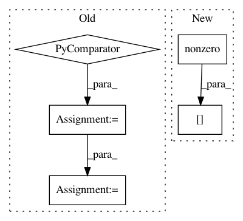

369d08e119950f356bee2408f6880f7bad1a60d4,pymc3/distributions/multivariate.py,Multinomial,__init__,#Multinomial#Any#Any#,483
Before Change
n *= tt.ones(m)
self.n = tt.shape_padright(n)
self.p = p if p.ndim > 1 else tt.shape_padleft(p)
lst = list(lst for _ in range(m))
else:
// n is a scalar, p is a 1d array
self.n = tt.as_tensor_variable(n)
self.p = tt.as_tensor_variable(p)
self.mean = self.n * self.p
mode = tt.cast(tt.round(self.mean), "int32")
diff = self.n - tt.sum(mode, axis=-1, keepdims=True)
inc_bool_arr = tt.as_tensor_variable(lst) < diff
mode = tt.inc_subtensor(mode[inc_bool_arr.nonzero()], 1)
dec_bool_arr = tt.as_tensor_variable(lst) < -diff
mode = tt.inc_subtensor(mode[dec_bool_arr.nonzero()], -1)
self.mode = mode
def _random(self, n, p, size=None):
original_dtype = p.dtype
After Change
diff = self.n - tt.sum(mode, axis=-1, keepdims=True)
inc_bool_arr = tt.abs_(diff) > 0
mode = tt.inc_subtensor(mode[inc_bool_arr.nonzero()],
diff[inc_bool_arr.nonzero()])
self.mode = mode
def _random(self, n, p, size=None):
In pattern: SUPERPATTERN
Frequency: 3
Non-data size: 5
Instances
Project Name: pymc-devs/pymc3
Commit Name: 369d08e119950f356bee2408f6880f7bad1a60d4
Time: 2017-09-17
Author: junpeng.lao@unifr.ch
File Name: pymc3/distributions/multivariate.py
Class Name: Multinomial
Method Name: __init__
Project Name: rusty1s/pytorch_geometric
Commit Name: b2002a8ef80ecbecee09fd61b910c987648455c7
Time: 2020-08-26
Author: matthias.fey@tu-dortmund.de
File Name: torch_geometric/datasets/karate.py
Class Name: KarateClub
Method Name: __init__
Project Name: NeuromorphicProcessorProject/snn_toolbox
Commit Name: 529f2a82727091b1b2b487afa89b4c02bbff04f1
Time: 2017-07-26
Author: bodo.rueckauer@gmail.com
File Name: snntoolbox/simulation/plotting.py
Class Name:
Method Name: plot_spiketrains